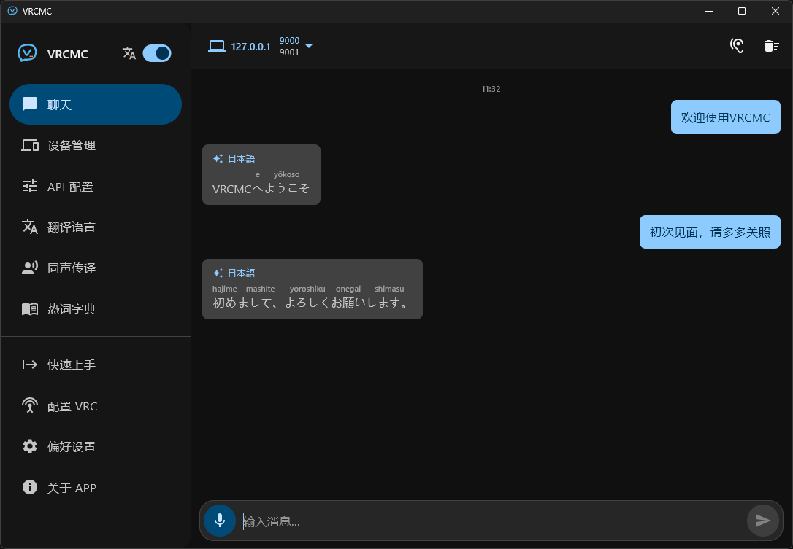

先翻译，再发送
最多选择两种目标语言，自由安排原文、译文和发送顺序。消息在进入 Chatbox 前就已准备好。
Qwen
DeepSeek
Edge Web
OpenAI
OSC · 翻译 · 语音 · VR
把翻译、语音输入与实时字幕带进 VRChat。VRCMC 通过局域网 OSC 连接你的虚拟世界，让每一句话都自然抵达。
为自然交流而设计
从输入到发送，从麦克风到字幕，把跨语言交流需要的一切放进一个流畅的工具里。
最多选择两种目标语言，自由安排原文、译文和发送顺序。消息在进入 Chatbox 前就已准备好。
接入云端或本地 ASR，在说话结束后自动识别、翻译并发送。
Windows 版可监听默认播放设备，在置顶字幕窗口中按句显示原文与译文。
将字幕投到左手、右手或视野中央，随控制器和头显自然移动。大小、字级与不透明度都可调。
聊天记录、热词和设置默认保存在本机；敏感凭据使用系统安全存储。只有你主动选择的服务才会接收待翻译文本。
热词替换、整句屏蔽、日文罗马字、消息朗读与应用内更新，都在需要时安静地出现。
一看就会
桌面和手机共享同一套清晰的操作逻辑。设备、翻译和语音设置各就各位，不影响你真正想做的事：和眼前的人聊天。

三步开始
不需要复杂配置。选择习惯的平台，让 VRCMC 与 VRChat 通过本机或局域网 OSC 建立连接。
从 GitHub Releases 下载 Windows 安装包或 Android APK，安装后即可开始使用。
在 Steam 的 VRChat 启动选项中加入 OSC 参数，然后重启 VRChat。同一台电脑运行时使用 127.0.0.1。
打开“快速上手”，选择 Edge Web 或配置自己的翻译服务，再按需开启语音输入与字幕。
--osc=9000:<你的局域网 IP>:9001